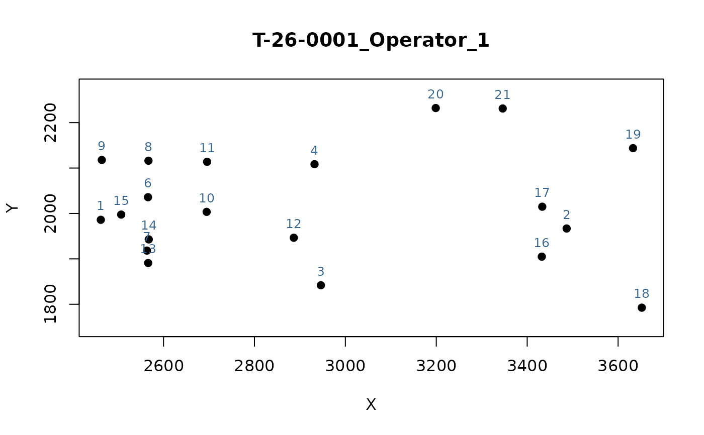

Produces a simple two-dimensional scatterplot of one specimen's landmark configuration (raw or Procrustes-aligned), with landmarks optionally numbered, for quality control of digitization and configuration checking.
Usage
plot_landmarks(
landmarks,
specimen = 1,
labels = TRUE,
background_image = NULL,
flip_y = TRUE,
...
)Arguments
- landmarks
An object of class
"intrait_landmarks"or"intrait_gpa", or a rawp x k x narray. Must be two-dimensional.- specimen
Integer index or character specimen identifier of the configuration to plot. Defaults to
1.- labels
Logical, label landmarks with their index. Defaults to
TRUE.- background_image
Optional path to a
.jpg/.jpegor.pngphotograph of the specimen, drawn as a background layer beneath the landmarks (e.g. to visually check whether a landmark was placed off the body outline). Only meaningful for raw, un-aligned digitized coordinates (a warning is issued iflandmarksis an"intrait_gpa"object, since Procrustes-aligned coordinates will not line up with the original photograph). Requires the (Suggested)jpegpackage for.jpg/.jpegfiles, orpngfor.pngfiles. Defaults toNULL(no background).- flip_y
Logical, flip
background_imagevertically before plotting. Image files are conventionally stored with row 1 at the top, while digitized landmark coordinates (as read byread_tps()/geomorph::digitize2d()) place the origin at the bottom-left; the defaultTRUEflips the image so it lines up with the landmarks without needing to pre-flip the file itself. Ignored whenbackground_imageisNULL.- ...
Further arguments passed to
graphics::plot().
Details
This is a deliberately generic viewer: it makes no assumption about
landmark count or anatomical scheme, and works equally well on raw,
Procrustes-aligned ("intrait_gpa"), or simulated configurations (e.g.
the n_landmarks-only shapes from simulate_fish_landmarks()) – the
natural companion to the package's scheme-agnostic functions
(gpa_fish(), detect_outliers(), correct_allometry(),
intraspecific_variability(), morpho_space()). For data digitized
following the FISHMORPH scheme specifically (Brosse et al. 2021, at
least 21 points), plot_fishmorph_points() is usually more
informative – it colours the 11 measurement segments, draws the body
outline/eye/scale bar, and highlights imputed/corrected/geometry-
flagged landmarks – but it requires that scheme and errors on anything
with fewer than 21 landmarks; use this function instead for any other
landmark configuration, or for a lighter-weight look at FISHMORPH data
without that added detail.
See also
gpa_fish(), morpho_space(), plot_fishmorph_points() (richer
viewer for FISHMORPH-scheme data specifically)
Examples
fish <- load_t26_saudrune_landmarks()
plot_landmarks(fish, specimen = 1)

if (FALSE) { # \dontrun{
# Overlay the original photograph (requires the "jpeg" package and a
# photograph in the same pixel coordinate system as `fish`'s landmarks):
plot_landmarks(fish, specimen = 1, background_image = "specimen1.jpg")
} # }